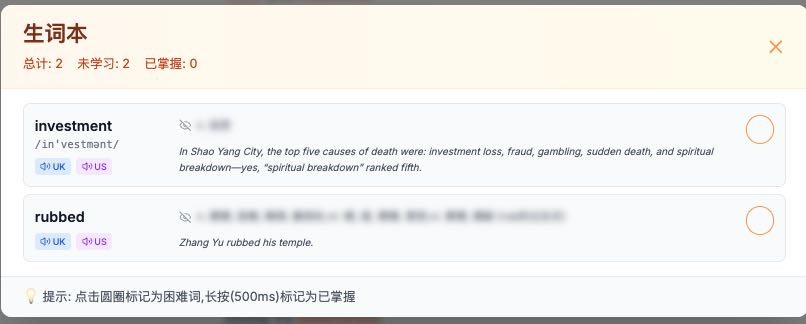
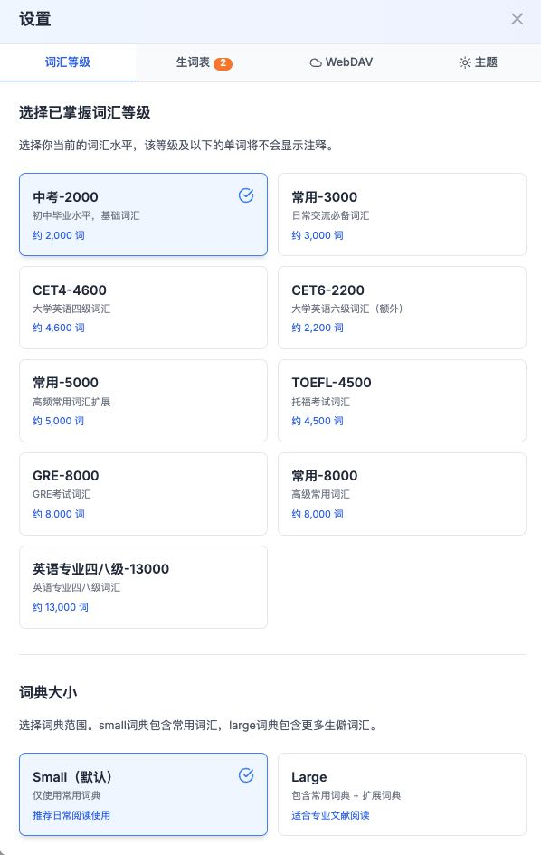

不仅是阅读，更是学习
集成了词典、生词本和同步功能，打造一体化的英语阅读环境。
完美支持 EPUB 和 TXT 格式。自动智能分页，根据屏幕尺寸调整段落，提供纸质书般的阅读体验。
根据 CET-4、CET-6、TOEFL 等等级自动标注生词。点击即可查词，自动加入生词本，告别频繁查字典的烦恼。
支持 WebDAV 协议，书籍、阅读进度、生词本多端无缝同步。在手机、平板和电脑间自由切换，学习进度不丢失。
简洁优雅的设计，专注于阅读体验

清晰的生词列表，支持按时间排序，方便复习。
简单直观的 WebDAV 配置，一键同步所有数据。
完美适配移动设备，随时随地开启阅读。

支持字体、字号、主题色及词汇等级的深度定制。
只需几步，即可搭建你自己的阅读环境
git clone https://github.com/dongjiahong/novel.git
cd novel
npm install
npm run dev
打开浏览器访问 http://localhost:3000 即可。
若需要跨设备同步功能，请确保配置正确的 WebDAV 服务地址。推荐使用支持 WebDAV 的网盘服务（如坚果云、TeraCloud 等）。